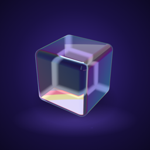
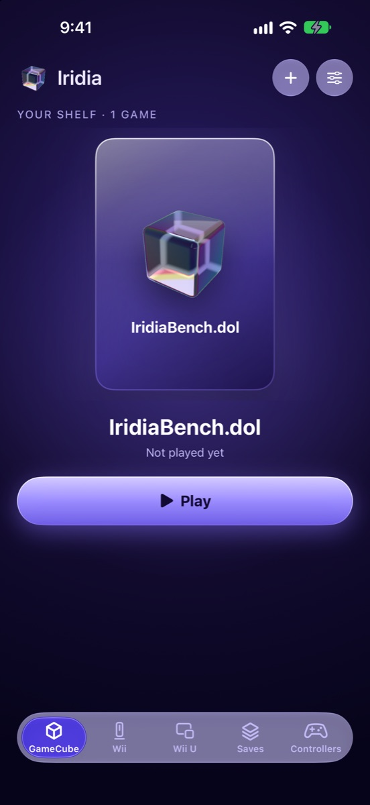
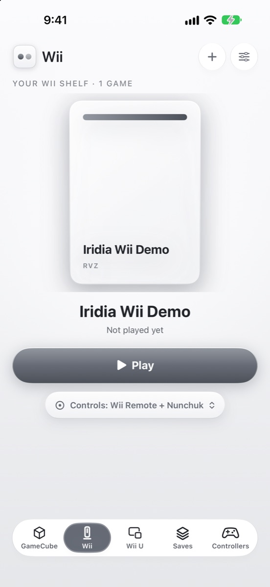
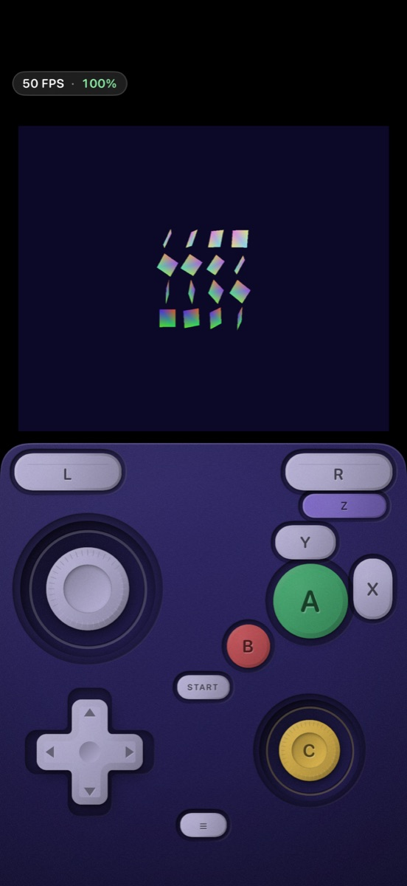

Iridia
Iridia: GameCube, Wii and Wii U emulator for iPhone and iPad. Play the games you own, straight from the App Store: no JIT, no sideloading, made for Apple devices.
Free to download. Every time you start a game you get free play time (10 minutes for GameCube and Wii, 20 for Wii U), and one purchase unlocks unlimited play on all three. Open source: github.com/IridiaEmu/iridia.



Why Iridia
- Straight from the App Store. Iridia runs without JIT, so there's nothing to sideload and no extra steps.
- One library for GameCube, Wii and Wii U. Each system has its own shelf, and you switch between them in the tab bar.
- Fast on iPhone. A tuned interpreter and Metal graphics, with up to 8x internal resolution for GameCube on newer devices.
- Touch or controller. Touch controls you can move and resize, or use any MFi, Xbox, PlayStation or Switch controller.
- Pick up where you left off. Save states, memory cards and settings for each game.
- Private. No ads, no tracking, no account.
Wii (new in 1.2)
- Wii controls on screen. Touch controls for the Wii Remote, Nunchuk, sideways Wii Remote and Classic Controller. Each game remembers which one it uses.
- Aim the pointer by touch or tilt. Drag on the picture, or tilt your iPhone or iPad. Shake and recenter are on screen too.
- Game controllers. MFi, Xbox, PlayStation and Switch controllers work. Real Wii Remotes can't connect, because iOS doesn't allow it.
- Files that work: RVZ, WIA, ISO, WBFS, GCZ and CISO disc images, plus homebrew. RVZ is the best choice.
- Wii games need more power than GameCube games, and run best on recent iPhones and iPads.
Wii U (experimental)
- Both screens, your way. TV only, TV with the GamePad in a small window, GamePad full screen, or both stacked (on iPad, and on iPhone in portrait). Swap the two screens any time, and each game remembers its layout.
- Touch the GamePad screen. Tap and draw right on the GamePad picture, with your finger or Apple Pencil.
- Motion controls. Tilt your iPhone or iPad to aim, like the GamePad.
- Needs 8 GB of memory: iPhone 15 Pro or later, iPad with M1 or later, or iPad mini with A17 Pro. Games may run slowly or show glitches.
Questions
Is there a GameCube emulator on the App Store?
Yes. Iridia is a GameCube, Wii and Wii U emulator available on the App Store for iPhone and iPad. Download it free, add your own game files, and play.
Can I play Wii games on iPhone?
Yes. Iridia 1.2 adds a Wii shelf next to GameCube and Wii U. It has touch controls for the Wii Remote, Nunchuk and Classic Controller, the pointer is aimed by touch or by tilting your device, and game controllers work too. Real Wii Remotes can't connect, because iOS doesn't allow it.
How do I play Wii games on my iPhone?
Install Iridia from the App Store and tap Wii in the tab bar. Tap +, then Choose a Game File, or copy your own game files to On My iPhone, Iridia, Wii in the Files app. RVZ, WIA, ISO, WBFS, GCZ and CISO disc images and homebrew work, and RVZ is the best choice. ZIP and 7Z files are unpacked for you.
Is there a Wii U emulator for iPhone?
Yes. Iridia has experimental Wii U support next to its GameCube and Wii shelves. It needs a device with 8 GB of memory, such as iPhone 15 Pro or later, an iPad with M1 or later, or iPad mini with A17 Pro. Games may run slowly or show glitches.
How do I play GameCube games on my iPhone?
Install Iridia from the App Store, then tap +, then Choose a Game File, or copy your own game files to On My iPhone, Iridia, GameCube in the Files app (the folder was named Games before version 1.2). ISO, RVZ, GCM and CISO files work, and ZIP and 7Z files are unpacked for you.
How do I play Wii U games on my iPhone?
Install Iridia and tap Wii U in the tab bar. Tap +, then Choose a Game File, or copy your own game files to On My iPhone, Iridia, Wii U in the Files app. WUA files, title folders and homebrew (RPX) work.
Does Iridia need JIT or sideloading?
No. Iridia runs without JIT for GameCube, Wii and Wii U, so it works straight from the App Store with no sideloading, no AltStore and no debugger.
Does Iridia come with games?
No. Iridia includes no games, keys, BIOS or firmware. You play game files you own: your disc backups or homebrew.
Which iPhones work?
Iridia needs iOS 26 or later. GameCube plays best on newer phones, and Wii games run best on recent iPhones and iPads. Wii U needs a device with 8 GB of memory: iPhone 15 Pro or later, an iPad with M1 or later, or iPad mini with A17 Pro. How well a game runs depends on the game and on your device, so use the free play time to check your games before you buy the unlock.
Is Iridia free?
Iridia is free to download. Every time you start a game you get a free play session: 10 minutes for GameCube and Wii, 20 minutes for Wii U, as often as you like. One purchase unlocks unlimited play on all three. No subscription, no ads, no tracking.
Is Iridia open source?
Yes. Iridia is free software based on the Dolphin and Cemu emulators. The source is at github.com/IridiaEmu/iridia.
GameCube, Wii and Wii U are Nintendo trademarks. Iridia is not affiliated with or endorsed by Nintendo.